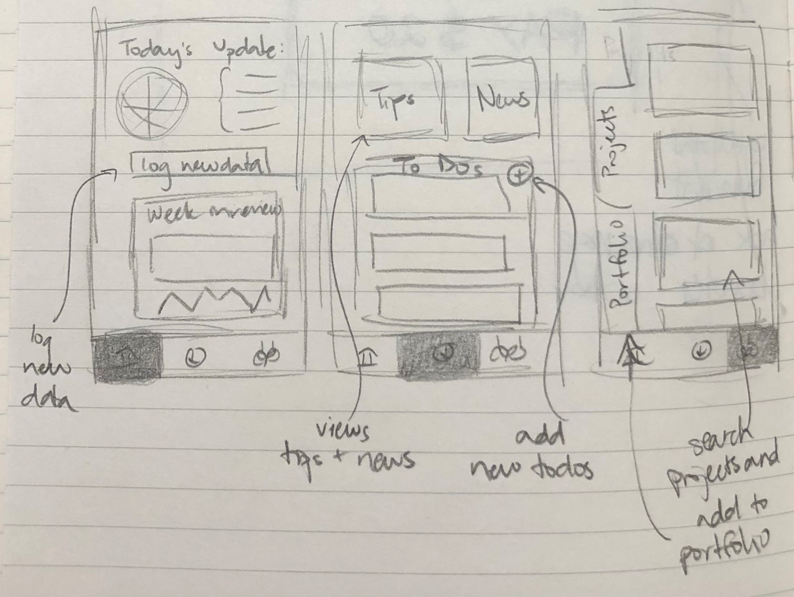

Iterative Design
The goal of this assignment is to design an interface for an emerging startup by sketching out some ideas, converging them into a prototype, and improve the final interface after conducting user testing.
11/10/20

Part 0: Selecting a Startup + Interface
For this project, we chose to create a mobile app for minimum, a startup that helps to track, reduce, and offset users' carbon emmissions. Minimum connects with users bank accounts to parse their transactions and calculate their carbon emmissions. It then allows users to buy into existing projects that will automatically offset their environmental impacts.
We believe that anyone and everyone can and should use this app, as everyone should be making an effort to reduce their carbon emmissions and negative environmental impacts. The main users of this app are most likely average people that are trying to make an effort to be more sustainable and environmentally conscious. Regardless of whether or not users can afford to buy into projects to offset their emmissions, everyone can still benefit from the track and reduce features of the app.

Part 1: Sketching & Wireframing
We began by sketching four different interface ideas for the app (shown below). After looking through all the ideas and discussing which components of each skecth best represented minimum's goals, we created a simple wireframe to guide our prototype design.

The main features we decided to keep from the sketches and add to the wireframes were the:
- Bottom nav bar
- Three main screens for each of minimum's goals (track, reduce, and offset)
- "Portfolio" and "project" sections in the "offset" screen
- The track page as the main/home page
- A "log" feature in the "track" page to allow for users to manually input data not in their transaction history
This led to the development of the below wireframes:

TRACK:
In the track section, you can see a dashboard breaking down your carbon footprint in the past week. Minimum automatically scrapes information from your bank expenditure to understand the products and services you consumed that would contribute to your carbon footprint.For more granular items like mileage, time spent in the shower, and cash purchases not included in bank information, you can update your carbon foosteps with the daily check-in function in addition to logging individual items.
REDUCE:
The reduce section shows tips of the day, educational components suggested to users by the app, in addition to top news items about carbon emissions.
ZERO:
The offsets section will be where users manage their carbon offsets portfolio. This is where they can see what their current portfolio comprises of, whether it is deforestation projects or replanting reefs. Users will also be able to buy into new projects, which they can browse in a discover sub section.
Part 2: Mockups

We then created the high-fidelitey prototypes from our wireframes, which we presented to our peers and a guest industry critic for feedback. The general consensus was that:
- We needed more consistent trainsitions, CTA, and fonts
- The navbar icons were not informative enough on their own
- Inconsistent use of color-coding for increases/decreases
This led us to develop the following prototype:
Prototype


Part 3: User Testing
Introduction:
Minimum is an app that automatically tracks, and then offsets, the carbon emissions of everything you do. You are a daily user of this app. In this task, you will be logging your carbon emissions, tracking and understanding them, in addition to buying carbon projects that help offset your emissions. The prototype you are testing is not live (hosted on an app called Figma), and only select buttons will be clickable. Hence, for some tasks, you may walk through the interface as if you would actually input numbers/select choices.
Tasks:
1. First, you would like to track your carbon emissions in this past week. How would go about that? What day did you emit the most carbon? [Success: Yes, No]
2. Now, you would like to log your daily carbon emissions. Walk
me through how you would do that. [Success: Yes, No]
3. Your next task is to explore your current portfolio holdings of carbon projects. Which project currently does your portfolio comprise the most of? [Success: Yes, No]
4. Finally, you would like to browse carbon projects and add a new one to your portfolio. Protecting Rainforest looks particularly attractive to you. Walk us through this process. [Success: Yes, No]
Questionnaire items:
1. What frustrated you most about this site?
2. If you had a magic wand, how would you improve this site?
3. What did you like about the site?
4. xHow likely are you to recommend this site to a friend or colleague
(0=Not at all likely, and 10=Very Likely)?
Conclusions
CONCLUSIONS